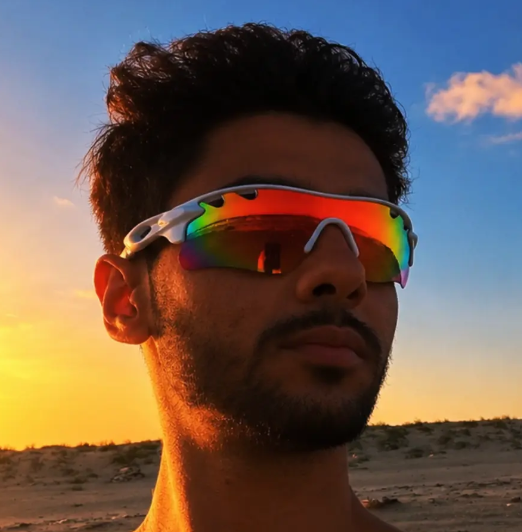
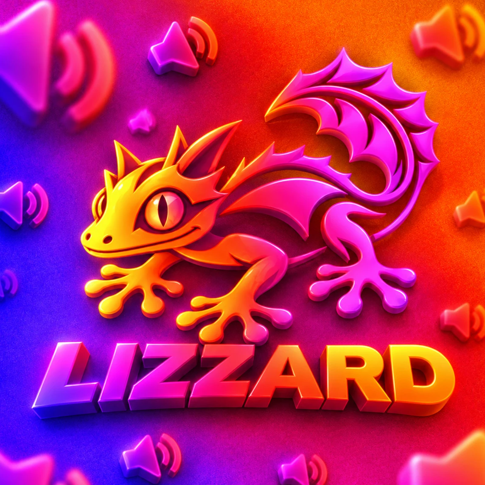

Modelagem 3D
Objetos, cenários e formas com personalidade. Modelagem em Blender para dar dimensão às ideias.
BLENDERDESIGN, DIMENSÃO & EXPERIÊNCIA
Sou Skidrow. Transformo ideias em universos visuais — da primeira forma em 3D à interface que dá vida ao jogo.
Explore meu universo01 / SOBRE MIM

Meu nome é Skidrow. Minha criatividade vive entre o design e os mundos digitais. Trabalho com modelagem em Blender, design gráfico e criação de experiências no Roblox.
Gosto de conectar forma, identidade e interação. Um objeto, uma composição ou uma interface: cada detalhe é uma oportunidade de tornar uma ideia mais interessante.
02 / O QUE EU CRIO
Quatro áreas. Uma visão criativa.
Objetos, cenários e formas com personalidade. Modelagem em Blender para dar dimensão às ideias.
BLENDERComposições visuais que comunicam. Cor, tipografia e identidade trabalhando juntas.
IDENTIDADE VISUALIdeias para experiências no Roblox. Conceitos de jogo, ambientes e interação pensados para jogadores.
ROBLOXInterfaces para Roblox com hierarquia visual, clareza e um estilo que faz parte do universo do jogo.
ROBLOX UI03 / EXPERIÊNCIA
Minha trajetória no universo Roblox.
TRAJETÓRIA PROFISSIONAL
Atuei na Unlimited, que deu início ao projeto SPORTV Land e posteriormente se tornou Uncover Studios.
Na época da minha passagem, a empresa era gerida por Anderson Nunes.
Futebol brasileiro em um universo digital.
Contribuí para a experiência SPORTV Land no Roblox, um projeto ligado à marca sportv, da Globo, trabalhando em diferentes frentes da criação visual.
04 / PROJETO PRÓPRIO
Um bot de Discord feito para uma comunidade de áudio.

O bot oficial da Lizzard Community.
A Lizzard Community reúne pessoas que criam e editam áudios. Antes do bot, cada áudio passava por um editor à mão: ajustar tom e velocidade, subir o volume, colar a vinheta da comunidade e exportar no formato certo.
O Lizzard BOT faz isso dentro do próprio Discord. O membro envia o arquivo com um comando e, em segundos, recebe um MP3 pronto, com a identidade da comunidade e sem precisar sair do chat.
/bypass
Processa o áudio enviado (MP3, OGG ou WAV): muda tom e velocidade, aplica ganho com limitador contra distorção e junta abertura, lizzardtag e encerramento. Tem opções de loudness, pitch (±12 semitons) e intro própria para Audio Makers, Staff e Boosters. Se o arquivo passar do limite, corta o áudio do usuário, nunca o encerramento.
/download
Baixa músicas em MP3 a partir de um link. Aceita SoundCloud, e links do YouTube e do Spotify são procurados no SoundCloud, comparando título e duração.
/tokens
Sistema de uso justo: 4 usos grátis por dia e 1 token extra a cada 2 pessoas convidadas. Staff e Boosters têm uso ilimitado, e um uso que falha é devolvido.
servidor
Mensagens de entrada e saída com banner, cargo Membro automático, comandos restritos ao canal certo e aviso de online/offline no #bot-status com um banner ASCII em gradiente.
05 / UNIVERSO VISUAL
Composições ilustrativas feitas para este portfólio. Projetos reais podem ser adicionados aqui.
06 / PRÓXIMA IDEIA
Modelagem, identidade, jogos ou interfaces.
O próximo universo começa com uma ideia.